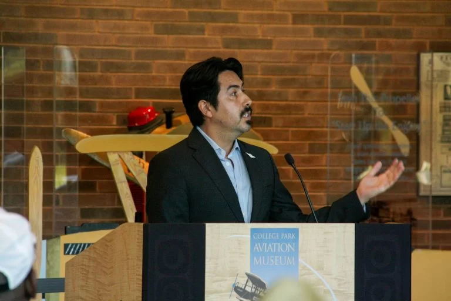
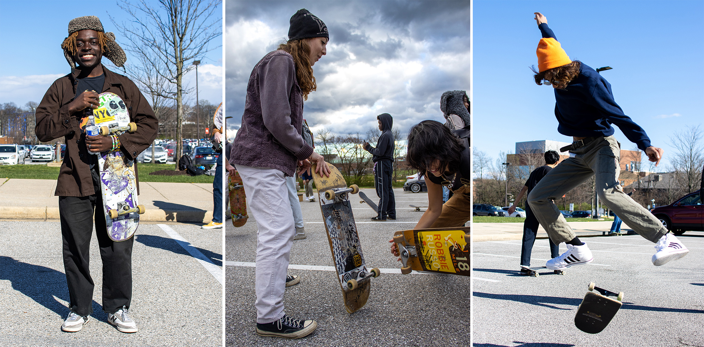
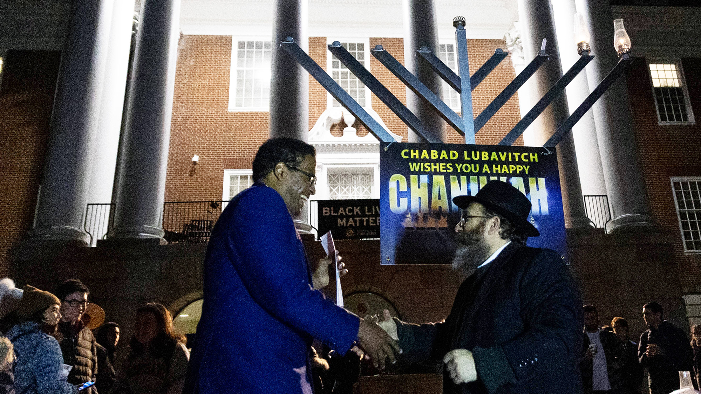

Legacy comes alive at College Park Aviation Museum
For College Park Here & Now
Barry Briscoe is a pilot, but that’s not why he went to the Aug. 12 unveiling at the College Park Aviation Museum. Briscoe showed up because his grandfather, George P. Briscoe, worked at the city’s airport alongside other men from Lakeland, a historically Black community in College Park...
A year after its inception, We Skate at UMD has flourished
For The Diamondback
On a sunny Friday, clusters of skateboarders bearing colorful name tags spread out in the Xfinity parking lot as they learned skills and practiced tricks tailored to their skill levels. It was We Skate at UMD’s second “edusk8,” designed to teach new skaters how to become more comfortable on their skateboards...
Joan Selma Hult Obituary
For Montgomery Sentinel
When Joan Selma Hult was a professor at the University of Maryland’s School of Kinesiology, she and her colleagues spent every lunch break on the tennis courts. In between teaching tennis, track and field, volleyball, and sports history and philosophy classes, Hult carved out time to play her favorite sport — fueled by some friendly trash talk — before changing back into her ‘professor clothes,’ and continuing on with her day....

Community gathers on McKeldin Mall for annual lighting of 10-foot menorah
For The Diamondback
The University of Maryland Bais Menachem Chabad Jewish Student Center hosted its annual 10-foot menorah lighting ceremony on Monday to welcome the second night of Hanukkah. President Darryll Pines and over a hundred students attended the event, which was held on the front steps of McKeldin Library...
